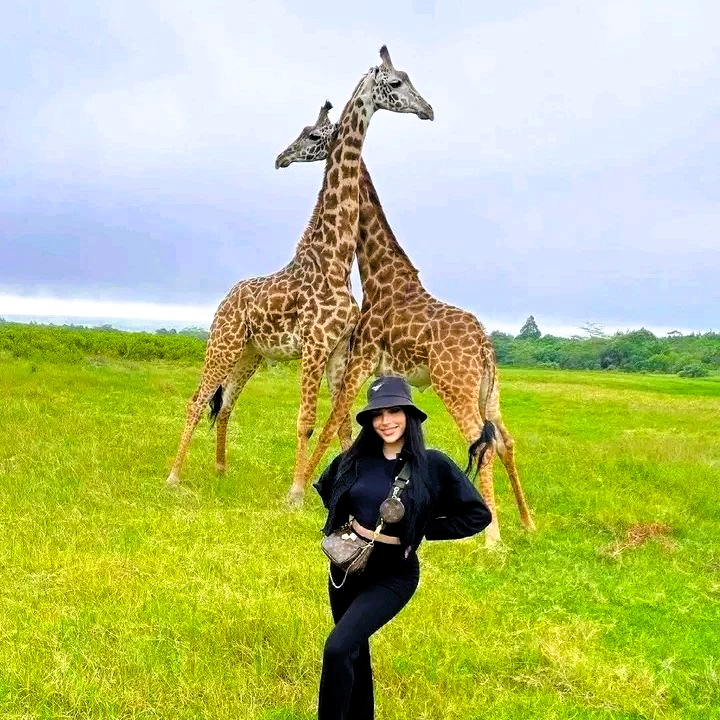
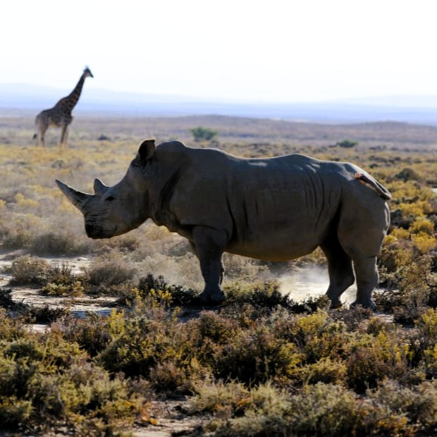
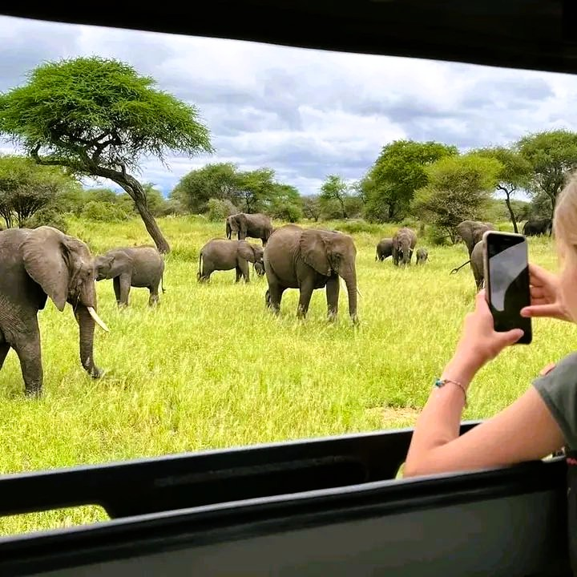
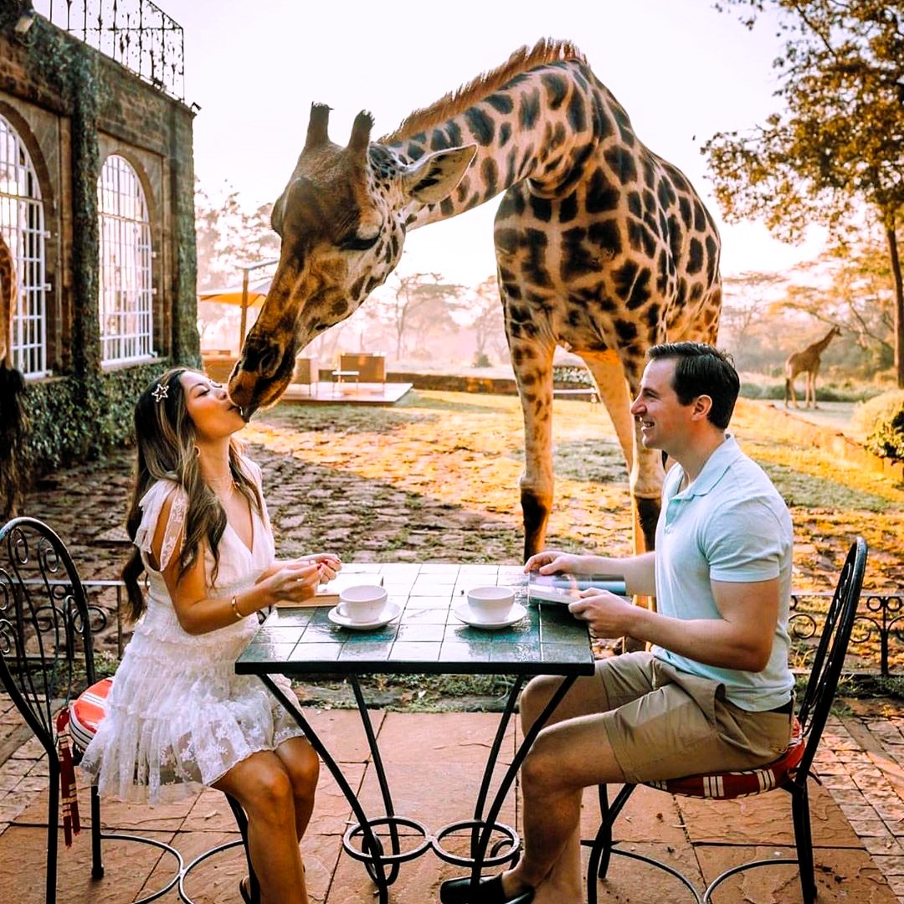
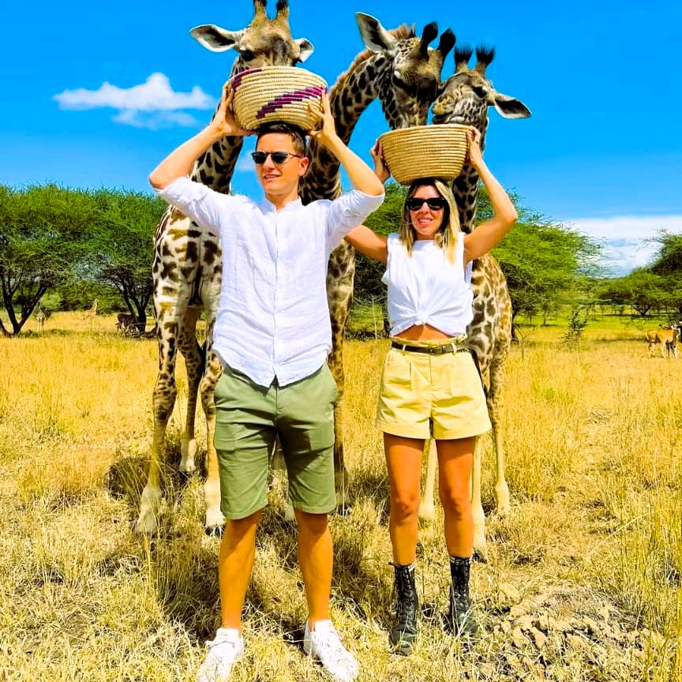
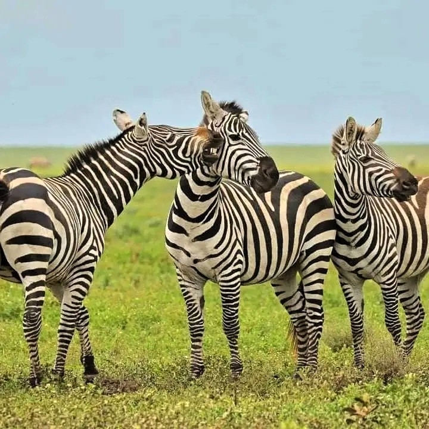
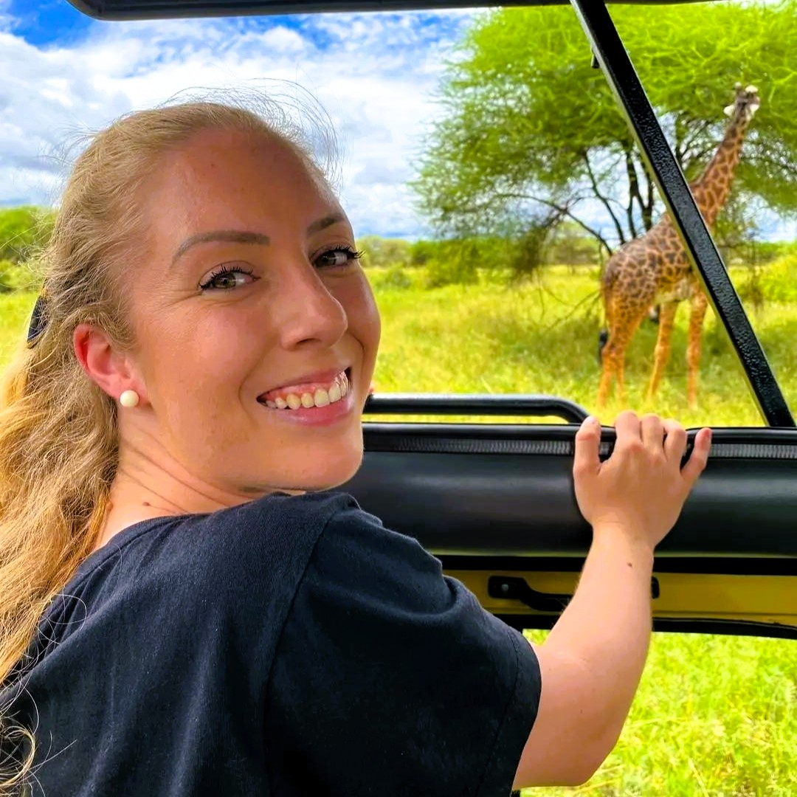
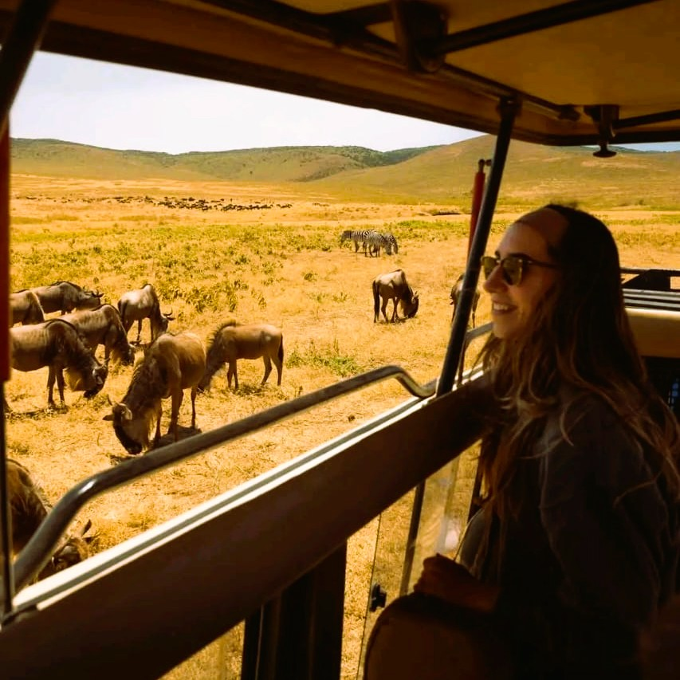
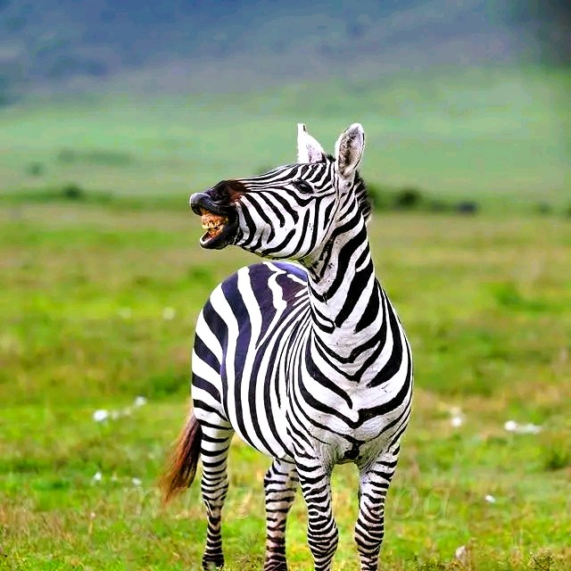
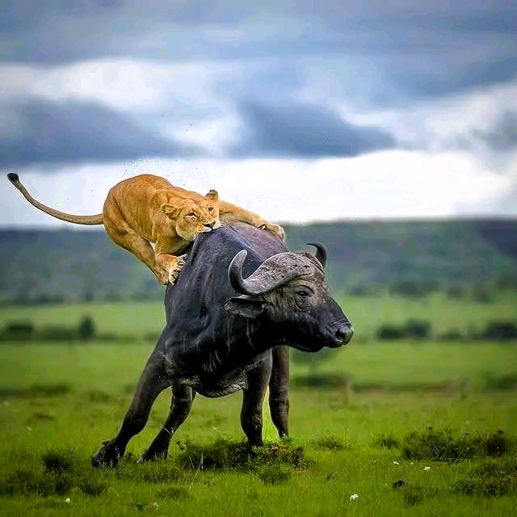

Choose the right duration
Day trips are efficient; multi-day safaris provide more time, variety and a calmer pace.

Zanzibar to the wild
Connect Zanzibar with Tanzania’s extraordinary national parks through carefully coordinated day trips and multi-day private safaris.
Safari from Zanzibar
A safari adds an unforgettable wildlife chapter to your Zanzibar holiday. Our team helps connect island transfers, mainland transport, park experiences and accommodation into a clear itinerary.
Choose a fast day trip for a first safari experience or allow several days for deeper game viewing and a more relaxed pace.
Short on time
Experience mainland wildlife while keeping Zanzibar as your holiday base.

Day tripOpen landscapes and classic safari sightings make Mikumi a popular introduction to Tanzania’s wildlife.

Day tripA vast reserve known for wild landscapes and a rewarding contrast to Zanzibar’s coast.

Day tripDescend into one of Africa’s most remarkable natural wildlife settings on an ambitious safari day.
Stay in the wild
Spend more time exploring and enjoy a less rushed wildlife experience.

2 daysA practical overnight safari with additional game-viewing time beyond a single-day visit.

3 daysMore time for game drives, changing light and the slower rhythm of a proper safari stay.

2 daysCombine elephant country, baobab landscapes and the celebrated Ngorongoro Crater.

3 daysExperience contrasting parks, Rift Valley scenery and diverse habitats over three days.
Tanzania icons
Longer routes connect world-famous parks for travelers ready to make safari a central part of the journey.

3 daysPair the Serengeti’s immense plains with the concentrated wildlife of the crater.

4 daysA rewarding circuit combining elephants, crater scenery and the sweeping Serengeti.

5 daysAllow more time for wildlife, landscapes and a less hurried journey through Tanzania’s north.
Before your safari
Day trips are efficient; multi-day safaris provide more time, variety and a calmer pace.
Tell us which animals, landscapes or parks matter most when comparing routes.
Your preferred comfort level and budget help shape suitable overnight options.
Bring practical layers, sun protection and travel documents; itinerary-specific guidance follows.